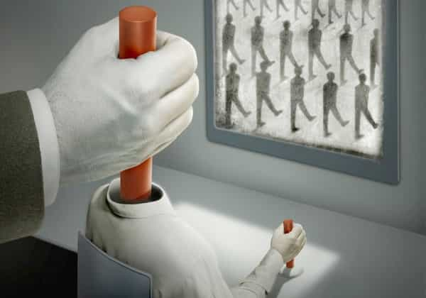

André is a young European who left his decaying country in 2012 for greener pastures. He enjoys exploring subterranean places, reading about a host of interconnected topics, and yearns for Tradition.


If some identity or group is on the side of the elite, it is framed as an underdog or ex-underdog who courageously stood up for its rights after having been unfairly persecuted. Muslim terrorists, anti-white murderers, and now invasive Buddhist killers are promoted as poor innocent victims with rights and a legitimate identity.
If some identity or group is on the target list, however, it is presented as “xenophobic”, “intolerant”, charged with being responsible for every problem around, and it ought to be trodden upon and vilified boundlessly. Note that it is perfectly possible for a group to fall from the first position to the second. In the 2000s Buddhism was the peak of kool-aid wisdom. You just couldn’t criticize so humane and enlightened a cult, or at least the lukewarm version of it that prevails in the West. Then the elite decided there should be a “Buddhist Hitler”, something unimaginable before, to justify Muslim exactions in Myanmar.
Psyops is all about manipulating ideas, identity, and feelings. It is about creating a narrative and making people internalize it so that they are steered into liking this, loathing that, being indulgent with some but overdemanding with others. The underdog-becoming-a-champion is a sham, not the truth. Actual underdogs who are not protected or supported by the elite are shamelessly repressed. Just ask the 80s’ pro-life activists.

I take care not to read too much about the occult elite. This kind of reading is absorbing and very informative, but when you’re dabbling too much in there forgetting to carry on with your own life becomes all too easy. It can also lead to depression due to how small and powerless it makes you feel. On the other hand, having basic knowledge about them and especially about how they manipulate helps you not to fall for their traps. Sovereignty on one’s mind matters crucially in life. As long as getting informed on the elite is beneficial, do it—otherwise focusing on your own ventures achieves way more.
An important tool used by the elite is appropriating “love” and “hate”—the words and the emotions. If the elite supports you, you’ll be identified with love or loveable things, hence you’ll be loveable. If the elite wants you out of their way, you’ll be identified with hate or disagreeable things, hence you’ll be despicable or hateable. This simple rule of thumb goes a long way.
Basically, both love and hate are moral and natural. If you were a Christian, you’d love and invest out of love towards God, your relatives, your friends, anyone who could rightly be considered a neighbor in the biblical sense. The internal emotion and the outward proofs of love were but one. Likewise, hate fulfilled a legitimate function: if someone willing to harm you knows you’ll hate him and likely hurt him, he is much likelier to refrain from harm.
The world, natural or not, is made of contraries. We have agonist and antagonist muscles so we can push or pull. Being able to love and to hate, and to act out of both, is part of a wholesome human nature. Now raising above feelings and being at least able to keep them at bay to take a conscious decision is something else. In any case, being capable of opposite acts does not mean self-contradiction but being balanced.

An artistic depiction of the love/hate equilibrium
Love and hate, though, were taken over and manipulated through clever means.
The first Trojan horse was modern (seventeenth century and beyond) romantic love. Before the modern world, the dating market was regulated by traditions that ensured a mix of sexual welfare and rewarding the deserving. Monogamy, negotiations between the groom’s and bride’s families, ensured that men could marry at their level, had a good chance to marry, and that potential brides wouldn’t be tainted by a number of premarital partners.
Romantic love was a mask for inflamed, unchecked male lust and freewheeling female hypergamy. Men starting running after women when they had no need to do so and women gladly inflated their social value. Look at the Belle Époque art. Yes, it extolls masculinity and femininity, and the artists cared about beauty. But look to the content: it glorifies female singers, dancers, all variations of high-valued courtesans, hooking up with wealthy, high-ranking men. Was Sarah Bernhardt really better than Kim Kardashian?
Thus, “love” was confused with lust, shortsightedness, forgetting one’s legitimate interests and frequently pitted against the traditional familial consciousness. The nineteenth century let us with a stock of bullshit in verse, usually written by incel, supplicating zeta poets, who have been appropriated and heralded as classics by official history. Eventually, after the second World War, the romantic love mask was discarded as unnecessary and the deregulation of the sexual marketplace took a more Marxist, or “emancipatory” as they say, turn.
Emancipation indeed
Although romanticism is not fashionable anymore, the Current Year media still use “love” rather heavy-handedly. They keep pushing a narrative where the globalists, along with their attacks and pet identities, are related to or identified with “love”, versus whoever or whatever is not siding with their interested must be associated to or identified with “hate”.
Kill whitey types are poor and oppressed, hence they should be indulged, empathized with, acknowledged as good boys who dindu nuthin—“love.” Anal marriage has been constantly branded as “love”, from the MSM to Ben & Jerry’s. Governments supported by Soros have been heralded as cool, progressive, edgy—“love”—and brave. On the other hand those not supported are accused of “hatred”, “hate speech” and so on.
In the West, the police will make sure you only very quietly and politely protest the No Borders anarchists, and if you literally or figuratively raise your voice, they will arrest you for inciting violence, or will look away as people in black bandannas wreck your car. If you punch a leftist, you incited violence with your fist. If a leftist punches you, you incited violence with your words. (Social Matter, “Right-Wing Activism Always Fails”)
As long as you’re not siding with the anti-male, anti-white, anti-western, anti-family, anti-middle class elite, whatever you do will be blackwashed and associated to “hate” or other disagreeable stuff.
1997: Buddhism is cool, Brad Pitt plays a Buddhist monk
2017: Buddhism = terrorism and swastikas
The opposite is also true. When Jewish leftists tried to browbeat Richard Spencer’s mom into selling her flats below the market prices and leaving her city, the alternative media uncovered their nefarious actions—and these leftists presented themselves as members of an organization called “Love lives here.” Robbing, threatening, swindling people is “love” when you’re a Leftist and your target victim is even tangentially related to a dissenter.
In France, bourgeois bohemian youtubers associated to promote themselves giving money to the pseudo-victim Muslims of Myanmar. How did they present themselves? As the #LoveArmyForRohingyas. I remember of a mainstream, vaguely new-age French writer who used the motto “love as a spade and humor as a shield.” This looked innocent—until I realized this just meant weaponizing parts of normal life and propagating chaos. At the same time, people who notice the Arab-Muslim violence are stigmatized as “hateful” or pronouncing “hate speech” and so on.
Years ago some leftists used to conclude their messages by the word “peace.” A feel-good, positive vibes word. But just before that they’d rant against white males, and “the rich”, and “the far right”, and this, and that. There was an obvious contradiction between their “peace” pose and their hostile deeds. The contradiction wasn’t an accident—the framing serves to maintain a narrative, a shared illusion Leftists keep trying to impose through extended violence.
Problem glasses, dyed hair and a fishmouth mean LOVE. Believe that, you white males!
Is the love-versus-hate narrative Manichean? Of course. (Way more, I would say, than the Stocks vs. Bitcoin issue.) Yet it works better than the mild-mannered conservative viewpoints. Most issues are complex, most people are lazy or have no time to dive deep. Issues must be condensed to be communicated. And, no matter how much you enjoy freedom of speech, strong symbolic pictures, fashionability, an easy-to-grasp narrative and peer pressure works better on most people than half-deep ponderings.
Having Brahmins to steer the opinion isn’t a problem per se. The problem comes when the Brahmins start working for the Rothschild and begin to destroy their own relatives—us—instead of leading them.
The narrative must be undermined. We can be successful, happy, in a way that makes us palatable and cool, even when billions are invested into shaming and blackwashing us. We can chide their hypocrisy, for example when they talk about “love” before berating and dehumanizing people. And it can be fun too.
Read Next: How The Perception Of Disgust Is Manipulated Over Time To Break The Human Spirit